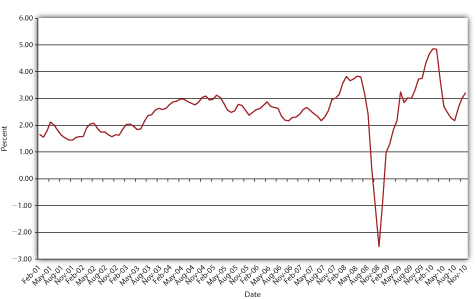

You might well ask at this point, What factors change interest rates? One big factor is inflation. As the price level rises, so too do interest rates, or at least what economists call nominal interest rates, the type of rates we’ve discussed so far. If nominal rates do not increase (and they often don’t, or can’t), lenders might receive more nominal dollars than they lent but actually get back less purchasing power. Imagine, for example, that you lent $100 for one year at 6 percent interest when a loaf of bread, pack of chewing gum, and two-liter bottle of Mountain Dew each cost $1. At the end of the simple loan, you would get back $100 × 1.06 = $106 and be able to enjoy an extra $6 of goods, say, two loaves of bread, two packs of gum, and two bottles of the caffeine and sugar rush known as Doin’ the Dew. But what if prices doubled over that year? Instead of some combination of 106 goodies, you’d be able to buy only fifty-three. Your nominal return would be positive, but your real return, what you could actually buy with the $106, would be steeply negative.
A simple equation, the Fisher Equation, named after Irving Fisher, the early twentieth-century U.S. economist who articulated it,To be frank, Benjamin Franklin and other colonists in eighteenth-century America understood it well.helps us to understand the relationship between inflation and interest rates more precisely:
where
ir = the real interest rate
i = the nominal interest rate (the type of interest rate the first part of this chapter discussed exclusively)
π = inflation (or expected inflation)
Figure 4.5 U.S. real interest rate, 2001–2010
In plain English, after the fact (ex postAfter the fact. in economists’ lingo), the nominal interest rate is equal to the real interest rate plus actual inflation. Before the fact (ex anteBefore the fact. in economists’ lingo), the nominal interest rate is equal to the real interest rate plus the expectation of inflation.
In early 2007, a man had a wallet returned that he had lost over sixty years earlier in France, during World War II.ABC News video, “Wallet Returned, 60 Years Later, A World War II Veteran gets his wallet returned to him sixty years later” (1/9/2007). In addition to his original Social Security card and a picture of his parents, the man received an unspecified sum of cash. Was losing the wallet a good investment? Why or why not?
No, because the risk that it would never be returned was very high. Plus, the dollar lost a significant amount of its purchasing power over the period due to inflation and the money earned no interest. At just 3 percent compounded annually, $100 would have grown to 100 × (1.03)60 = $589.16 after 60 years. At 6 percent, $100 would have grown to 100 × (1.06)60 = $3,298.77.
Traditionally, inflation expectations were unobservable so real rates were known only ex post. However, relatively new and special types of bonds indexed to inflation, called Treasury Inflation Protection Securities (TIPS), provide real interest rate information, allowing market participants to observe ex ante inflation expectations. For example, if the yield to maturity on a regular, nonindexed ten-year Treasury bond is 5 percent, and the yield on the ten-year TIPS is 2 percent, the inflation expectation, via the Fisher Equation π = i − ir, is 5 −2 = 3 percent. Figure 4.5 "U.S. real interest rate, 2001–2010" shows how inflation expectations have waxed and waned since the introduction of TIPS in 1997.